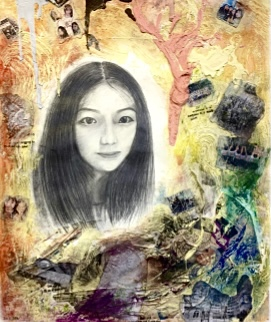

Sculpture
Sketch

Body Sketch

Time's Hourglass
The work is based on printmaking and character sketches, which combine sketch self-portraits, white latex, crayons, water-based paint, and newspapers. I was sparked to create it when my mother was showing me pictures of different periods in my life. I wanted to present all my life turning points in one artwork, which allows me to feel my life in the painting.

Sketch
Man

Oil painting